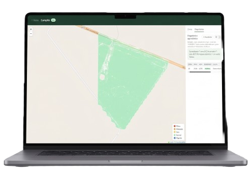
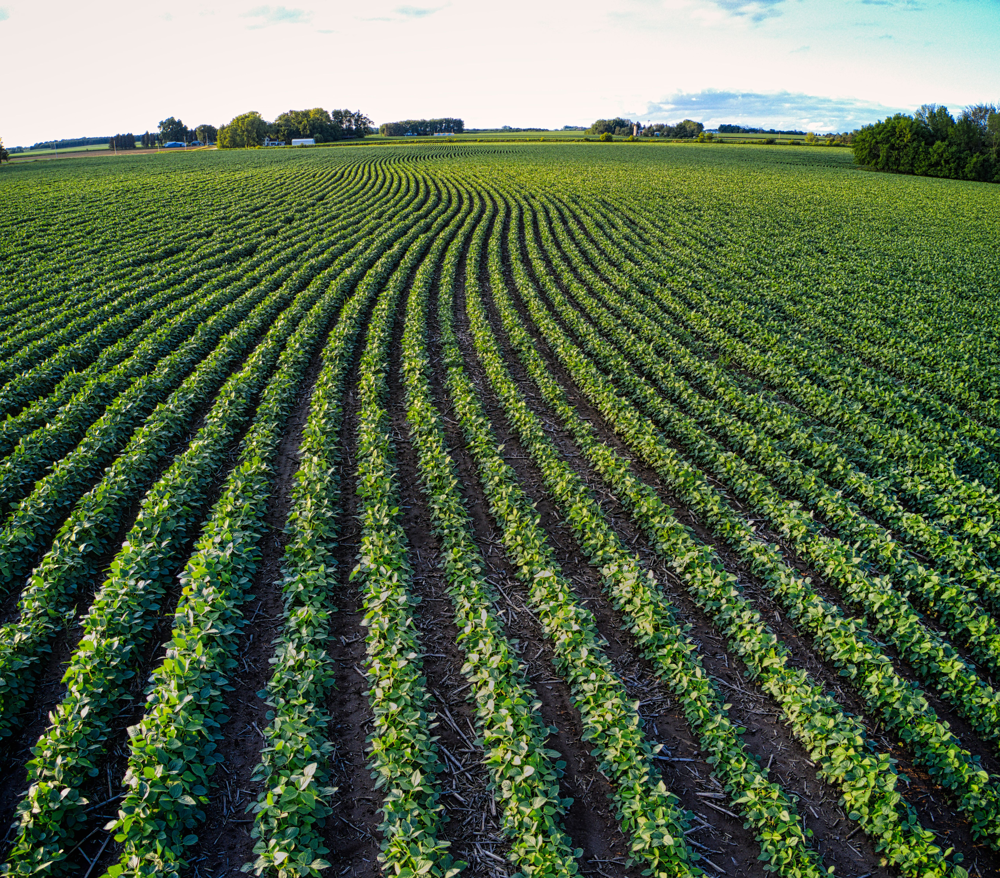

Ortomosaicos de dron + índices espectrales (NDVI, NDRE, SAVI) que detectan estrés hídrico, plagas y enfermedades por zona, no por lote entero.

Nuestra plataforma satelital con IA monitorea la biodiversidad del suelo, detecta anomalías fitosanitarias, y alerta en tiempo real. Precisión al ritmo que exige el campo.

Todo lo que necesitás saber sobre AgroNexo y nuestra plataforma de precisión agronómica.
Procesamos imágenes multiespectrales de Sentinel-2 y drones DJI Mavic 3 Multispectral. Nuestro pipeline extrae bandas NIR, RED y GREEN para calcular NDVI, NDRE y SAVI con resolución centimétrica, generando alertas automáticas ante variaciones superiores al umbral configurado.
AgroNexo está optimizado para soja, algodón, maíz y sorgo en el NEA argentino (Chaco, Formosa, Corrientes). El sistema contempla las particularidades edáficas de vertisoles y suelos sódico-salinos de la región.
Nuestro modelo alcanza 99% de precisión en la clasificación de zonas. Clasificamos patrones espaciales (circulares, lineales, difusos) para diferenciar enfermedades fúngicas, compactación, déficit hídrico y plagas con scoring probabilístico.
Sí. AgroNexo expone una API REST completa con endpoints GeoJSON y exportación a Shapefile, ISO-XML e integración IoT. Compatible con sistemas de autoguiado John Deere y Case IH mediante RTK.
El pipeline GIS completo (carga GeoTIFF → índices → vectorización → diagnóstico) tarda entre 2 y 8 minutos según el tamaño del archivo. El progreso es visible en tiempo real mediante polling cada 2 segundos.
Desde el dashboard podés descargar reportes PDF (WeasyPrint), archivos Shapefile.zip para maquinaria y órdenes ISO-XML para ISOBUS. También están disponibles via API para integración automática con tu flujo de trabajo.
Junto a productores líderes del NEA estamos transformando la toma de decisiones en el campo con tecnología GIS de precisión.